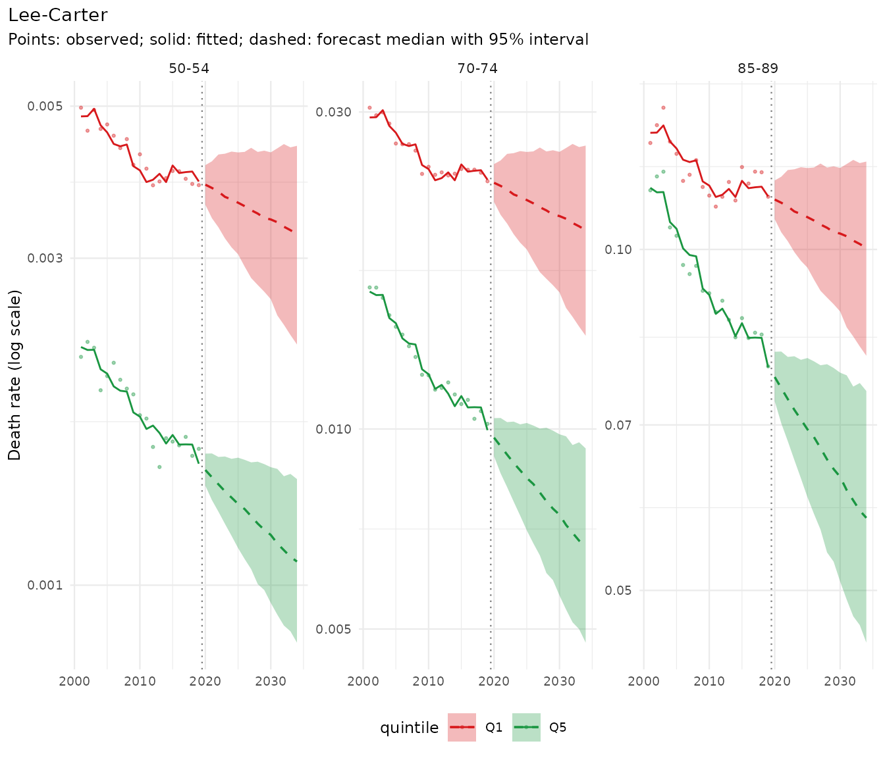
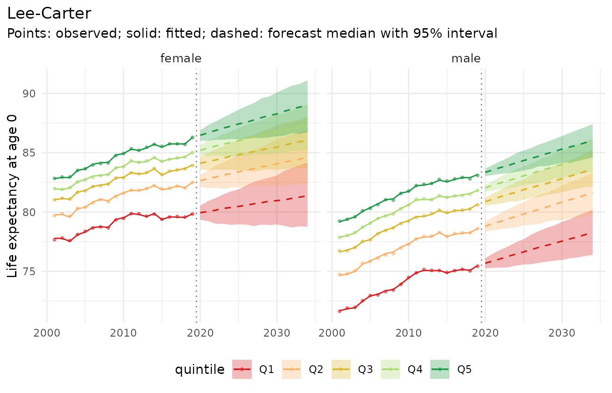
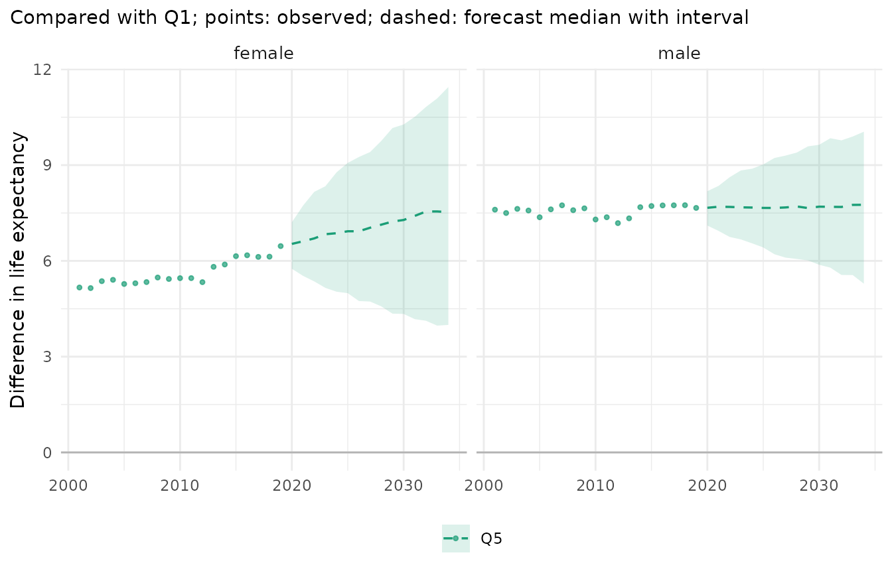

mortensor is experimental software written largely with AI coding assistants (“vibe-coded”). Use it at your own risk and check results independently.
mortensor builds probabilistic mortality forecasts: simulated paths of future death rates, from which life expectancy, gaps between groups and other quantities follow with their uncertainty. Any model can be used, implemented in the package or wrapped from demography, StMoMo, StanMoMo or bamp, and models can be combined. This vignette goes once through the main steps with one simple model; the other vignettes take one step at a time.
1. Data
ons_data holds deaths and mid-year populations in
England by sex, 5-year age group and decile of the Index of Multiple
Deprivation (decile 1 most deprived), 2001-2019 (Source: Office for
National Statistics, licensed under the Open Government Licence v3.0).
mt_data() reads them, mt_as_exposure() takes
the mid-year populations as person-years at risk, and
mt_group_levels() combines the deciles into quintiles:
x <- mt_data(deaths = ons_data, population = ons_data, by = c("sex", "imd_decile"), age = "age_group",
value = c(deaths = "all_causes", population = "population"))
x <- mt_as_exposure(x, type = "midyear")
x <- mt_group_levels(x, "imd_decile", function(d) paste0("Q", ceiling(as.numeric(d) / 2)), name = "quintile")
x
#> <mt_data> 10 strata by sex, quintile, omega = 110
#> deaths mixed widths (1,4,5) 0-89, 90+; periods 2001-2019 (width 1); 3800 cells
#> exposure mixed widths (1,4,5) 0-89, 90+; periods 2001-2019 (width 1); 3800 cells
#> population mixed widths (1,4,5) 0-89, 90+; periods 2001-2019 (width 1); 3800 cells
#> grid <mt_axis: age, 20 intervals> 0 1-4 5-9 10-14 ... 80-84 85-89 90+
#> <mt_axis: period, 19 intervals> 2001 2002 2003 2004 ... 2017 2018 2019mt_validate() checks the data for impossible values,
gaps and inconsistent totals:
mt_validate(x)
#> <mt_validation> no findings2. The past
Life expectancy at birth by quintile, with Poisson intervals:
mt_compare_forecasts(list(observed = x), periods = c(2001, 2019), strata = c("female.Q1", "female.Q5",
"male.Q1", "male.Q5"))
#> Key: <label, period>
#> label period observed
#> <char> <num> <char>
#> 1: female.Q1 2001 77.7 (77.5-77.8)
#> 2: female.Q1 2019 79.8 (79.7-79.9)
#> 3: female.Q5 2001 82.8 (82.7-83.0)
#> 4: female.Q5 2019 86.3 (86.2-86.4)
#> 5: male.Q1 2001 71.6 (71.5-71.8)
#> 6: male.Q1 2019 75.4 (75.3-75.5)
#> 7: male.Q5 2001 79.2 (79.1-79.4)
#> 8: male.Q5 2019 83.1 (83.0-83.2)3. A model and a forecast
Lee-Carter, fitted to each sex and quintile separately, as a simple
example. mt_forecast() simulates 500 paths of future death
rates:
fit <- mt_fit(lee_carter(), x)
fc <- mt_forecast(fit, h = 15, n_draws = 500, seed = 1)
fc
#> <mt_draws> Lee-Carter; origin 2019; 20 ages x 15 periods (2020-2034) x 10 strata x 500 draws
mt_plot_forecast(fc, ages = c("50-54", "70-74", "85-89"), strata = c("female.Q1", "female.Q5"))
4. Results
Life expectancy is computed for every path, so its interval contains the uncertainty of all ages together:
mt_plot_life_expectancy(fc, at = 0)
The gap between the least (Q5) and the most deprived quintile (Q1), also path by path:
gap <- mt_contrast(fc, var = "quintile", ref = "Q1", at = 0)
mt_plot_contrast(gap, observed = mt_contrast(x, var = "quintile", ref = "Q1"), levels = "Q5")
Separate Lee-Carter models continue each quintile’s own trend, so the female gap, which widened after 2011, keeps widening, with intervals that grow quickly. Whether that is plausible is a question of model choice (“Choosing and combining models”); a model that pools the quintiles behaves differently.
Other quantities work the same way: asr()
(age-standardised rates), prob_dying(),
mt_inequality() (slope and relative index of inequality),
mt_decompose() (contributions of ages and causes to a
gap).
5. Was the model any good?
A backtest fits the model to the years up to 2008, …, 2014, forecasts five years from each, and scores the forecasts against the observed rates:
bt <- mt_compare(list("Lee-Carter" = lee_carter()), x, origins = 2008:2014, h = 5, n_draws = 200)
mt_score_table(bt, metrics = c("crps", "cov80", "cov95"))
#> model crps cov80 cov95
#> <fctr> <num> <num> <num>
#> 1: Lee-Carter 0.0683 0.618 0.793The 95% intervals contained 79% of the observed rates, fewer than 95%: Lee-Carter’s intervals are too narrow on these data. “Backtesting and scores” explains the scores, “Tuning and recalibration” how to widen the intervals.
Where next
| Step | Vignette |
|---|---|
| Your own tables | “Your own data, from CSV to report” |
| Age groups and single years | “Ungrouping age groups: methods and diagnostics” |
| Smoothing | “Smoothing death rates” |
| Where a forecast starts | “Where a forecast starts: the jump-off” |
| Scores and backtests | “Backtesting and scores” |
| Choosing settings, widening intervals | “Tuning and recalibration” |
| Models and ensembles | “Choosing and combining models”, “Model reference” |
| Published sources of the methods | “Methods and sources” (package website) |
| Totals and parts | “Coherent forecasts” |
| What drives a gap | “Decomposing differences in life expectancy” |
| How unequal lifespans are | “Lifespan variation” |
| Deaths above the expected | “Excess mortality” |
| Complete analyses | “Inequality in England”, “Causes of death by deprivation”, “Differences between the German Laender” |